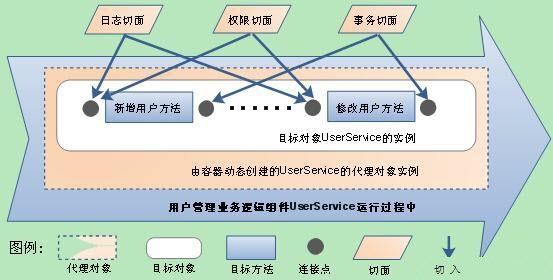

在传统的编写业务逻辑处理代码时，我们通常会习惯性地做几件事情：日志记录、事务控制、权限控制、安全检查等，然后才是编写核心的业务逻辑处理代码。这样大量的非业务逻辑的代码占据了我们主要的精力，而且这些方法都是通用的。
面向切面编程就是将这些抽取出来，所有共有代码全部放置到某个地方集中管理，然后在具体运行时，再由容器动态织入这些共有代码。这样会有以下两个好处：

切面（Aspect）其实就是共有功能的实现。如日志切面、权限切面、事务切面等。在实际应用中通常是一个存放共有功能实现的普通Java类，之所以能被AOP容器识别成切面，是在配置中指定的。
通知（Advice）是切面的具体实现。以目标方法为参照点，根据放置的地方不同，可分为前置通知（Before）、后置通知（AfterReturning）、异常通知（AfterThrowing）、最终通知（After）与环绕通知（Around）5种。在实际应用中通常是切面类中的一个方法，具体属于哪类通知，同样是在配置中指定的。
连接点（Joinpoint）就是程序在运行过程中能够插入切面的地点。例如，方法调用、异常抛出或字段修改等，但Spring只支持方法级的连接点。
切入点（Pointcut）用于定义哪些通知应该切入到哪些连接点上。不同的通知通常需要切入到不同的连接点上，这种精准的匹配是由切入点的正则表达式来定义的。
目标对象（Target）就是那些即将切入切面的对象，也就是那些被通知的对象。这些对象中已经只剩下干干净净的核心业务逻辑代码了，所有的共有功能代码等待AOP容器的切入。
代理对象（Proxy）将通知应用到目标对象之后被动态创建的对象。可以简单地理解为，代理对象的功能等于目标对象的核心业务逻辑功能加上共有功能。代理对象对于使用者而言是透明的，是程序运行过程中的产物。
植入（Weaving）将切面应用到目标对象从而创建一个新的代理对象的过程。这个过程可以发生在编译期、类装载期及运行期，当然不同的发生点有着不同的前提条件。譬如发生在编译期的话，就要求有一个支持这种AOP实现的特殊编译器；发生在类装载期，就要求有一个支持AOP实现的特殊类装载器；只有发生在运行期，则可直接通过Java语言的反射机制与动态代理机制来动态实现。